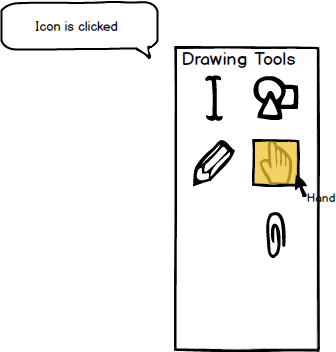
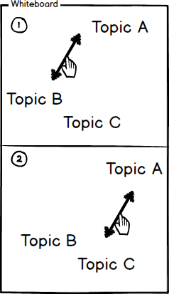
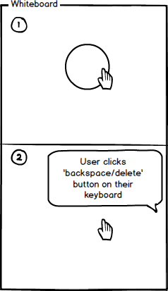

2.7.5. Hand Tool
To use the hand tool, the user moves the cursor over to the 'Drawing Tools' window and clicks on the hand tool icon.
As shown in Figure 1, once the hand tool is clicked, the system responds by highlighting the tool and displaying the
name of the tool in small text under the cursor.

Figure 1: Hand tool icon.
Once the Hand Tool is selected, the user may 'grab' (by clicking and holding) any object created in
the EClass program or uploaded to the program, as well as any object uploaded to the EClass program.
As shown below in Figure 2, objects that can be moved are (1) & (2) text objects such as arrows
and text as well.

Figure 2: Using the hand tool to move objects.
The Hand Tool can also be used to delete any object created in the EClass program or uploaded to
the program. In order to delete an object, the user (1) clicks on the object they wish to delete and
then (2) clicks the 'backspace/delete' button on their keyboard as shown below in Figure 3.

Figure 3: Deleting an object with the hand tool.
Prev: pencil-tool
| Next: attachment-overview
| Up: drawing-overview
| Top: index